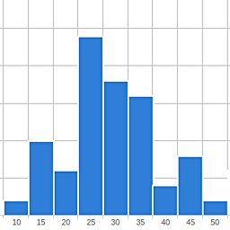

Traditional databases such as MySQL are not designed to perform well in analytical queries, which requires access to possibly all of the rows on selected columns. This results in a full table scan and it cannot benefit from any indexes. Column-oriented engines try to circumvent this issue, but I went one step deeper and made the storage column value oriented, similar to an inverted index. This results in 2 — 10× speedup from optimized columnar solutions and 80× the speed of MySQL.
Final benchmark results are presented in Figure 1, but their details are discussed later. It presents aggregated query times for nine different queries of OlapCalc (this project) and five other database products. OlapCalc supports both single-threaded and multi-threaded execution, and in the tested hardware multi-threading gave 3× speed boost. Some database products support only a single execution thread (MySQL) where as others would support multi-threading but it is disabled in the free community edition (e.g. InfoBright). MonetDB is multi-threaded and is designed to utilize CPU cache-aware algorithms. Nevertheless OlapCalc is 2.1× as fast (100 ms vs. 210 ms). Further analysis and memory usage follows later.
The read-only database is implemented as a background FastCGI process which loads the data from disk at startup. The current environment is a 64-bit Linux inside a virtual machine, in which the data reading and on-the-fly indexing speed is ≈14 Mb/s, or 1 Gb in just over a minute. The resulting memory usage is 25 — 35% of the raw file size, depending on the number of unique values in columns. The inverted index can be further reduced by ≈40% by storing it in a compressed format. However the on-the-fly decompression of required columns increases the query time to 3.8× of the original time.
The system provides a simple HTTP API which returns calculation results as a JSON string, so it is easy to integrate with any front-end UI or graphs. At the current stage there is no any support for SQL queries, but it isn't too difficult to add the support. The current implementation supports queries which group by a list of columns and asks for a single aggregation function (sum, avg, median, ...) of a single column.
The data is stored purely in RAM, so there is no need for disk access unless data has been swapped to disk. On big datasets (50 Gb and beyond) this will become a problem even when compression is utilized. This can be avoided by either pre-aggregating the data at some level, or by partitioning the data into smaller sub-sets and merging the results from multiple machines. Luckily RAM is getting cheaper year by year and 64-bit operating systems have plenty of room for growth in available memory size.
Currently the only requirement for input files is that their column names follow a certain convention. Column names need to be post-fixed with either _id, _txt or _date to indicate their type. If a text-type column doesn't have a pre-defined id column, the id is auto-generated on-the-fly in the alphabetical order. The numerical values (from which aggregates are calculated) are identified by the _fact postfix.
The underlying storage principle is actually very simple: for each column's each unique value, store the list of row numbers which have this value. In effect this is an inverted index of each column which is typically used by search engines. To implement a "group by" function one only needs to implement the merging of two lists of integers, which is a well studied problem. Standard approaches are Sort-merge join and hash join. In some cases hash join is faster, but it requires to either store a hash table for all columns (which uses extra memory) or building it on-demand (which takes extra time).
To utilize efficient bit-wise AND operator in joins, a set of row numbers is stored in a 64-bit integer by using top 21 bits for the " address" and 43 bits for the "content". The address of nth row number is floor(n / 43), and its location within the block is mod(n, 43). The merge algorithm utilizes the standard merge join to find the correct address and bit-wise AND to determine which rows within the block exist in both columns. This logic is iteratively applied when there are more than two columns. The addressing scheme is illustrated in Figure 2 with a reduced number of bits visualized. The storage is very compact when the content is mostly ones, which occurs on low-cardinality columns and if the data is ordered by this column before insertion. If not then most of the bits will be zero and more blocks are required for storage. This is countered by applying an extra compression step to those columns which benefit the most.
The number of bits used for block address is a tradeoff between efficiency, memory waste on sparse columns and the total number of unique addresses. When n bits are used for address and 64 - n for content, the total number of rows that can be supported is f(n) = 2n · (64 - n). For example f(16) ≈ 3.1 million, f(21) ≈ 90 million and f(32) ≈ 671 million. The number 21 was chosen because 90 million is not too low limit and 64 = 21 · 3 + 1, which means that three addresses can be stored in a single 64-bit integer, together with a extra bit for storing a flag value. If more than 90 million rows needs to be processed, the data can be partitioned into multiple chunks which are processed independently and finally merged.
During the merging the next matching block address is found by an exponential search strategy. It means that the step length is doubled until the found value is greater than the value which is being searched. Once this occurs it is known that the target value should be found within the current interval, for which a binary search is executed. Once the range is narrowed down to a relatively short length it is scanned by linear search, because it is more cache friendly and thus gives some performance boost. This algorithm is O(log(d)), where d is the number of elements from the current location to the target value. These steps are shown in Figure 3. Exponentially growing initial steps are shown in red. The searched value is indicated by the green circle. After it is bypassed the current interval is searched by a binary search, which is shown in blue. Once the interval has shrunk enough it is scanned by a linear search.
The merge algorithm produces a list of JSON output tokens, some of which are constant strings such as column names and opening tags, and others are placeholders for aggregated values. Initially these placeholders contain the list of row numbers which will be used to determine the aggregated value, stored in the previously explained block storage format. Then the measure type and aggregated column is chosen, and all placeholders' values are updated to store the result of the aggregation function. After this is done the output string can be generated. Further complexity arises from on-demand decompression and also multi-threading each of these steps.
The data compression is based on Elias gamma coding, which is a variable length code and efficient in storing small integers. Storing the number n takes 2 + 1 bits, which is still significant for bigger numbers. To avoid this problem, two different strategies are applied (one for block addresses and another for block contents). For block addresses can just store the deltas between the addresses, which are a lot better suited for this type of code. For block contents a run length encoding is used, and run lengths are stored as Elias gamma codes as well. Typically this reduces the memory usage by 40% but increases the processing time to 3× of the original. Perhaps some other compression scheme would be faster to decompress.
In benchmarks the used dataset is 1 Gb of property listings data (≈ 6 million rows), which can be compressed down to 70 Mb by aggressive settings on 7zip. So far I've ran the benchmarking suite for MySQL, InfoBright, InfiniDB and MonetDB. They have quite different implementation and design goals, but all the tested queries are like "SELECT x, y, z, avg(a) FROM table GROUP BY x, y, z ORDER BY x, y, z" without any WHERE clauses. The environment is a 64-bit Linux running on Inter Core i7-3630QM @ 2.4 Ghz with 6 of the 8 cores enabled for the virtual machine, with 4 Gb of RAM. Some care had to be taken to avoid surprising caching effects. The benchmark is meant to measure the actual calculation performance, not caching or pre-calculation efficiency. Ideally the system would require minimal configuration and just adapt to which ever data it is fed.
The step in the benchmark is to load the test data to all of these database engines. Generally they all support bulk-loading of CSV files, but there were some problems with Chinese characters in people's name column. Also there were some differences across vendors on which SQL syntax to use, or whether a proprietary batch loading tool was supplied. For MonetDB I used "COPY INTO table FROM STDIN" and InfiniDB has its own cpimport tool. OlapCalc reads data in directly from a set of CSV files and others supported "LOAD DATA LOCAL INFILE 'filename' INTO table FIELDS TERMINATED BY ';'". Load times and memory usage report is shown in Table 1.
| Engine | Load time (s) | Disk (Mb) | RAM (Mb) |
| MySQL InnoDB | 183.8 | ??? | 168.6 |
| InfoBright | 60.5 | 123.1 | 154.5 |
| InfiniDB | 266.8 | 1587.5 | 1024.0 |
| MonetDB | 192.8 | 617.6 | 104.5 |
| OlapCalc | 76.2 | 0.0 | 361.7 |
| OlapCalc (compr.) | 81.9 | 0.0 | 231.5 |
Runtimes of individual queries are shown in Figure 4. The aggregated values in the middle column are same as those in earlier Figure 1. Detailed timings on the left gives a detailed view on each product's performance, namely OlapCalc has a very distinct graph from others. OlapCalc's slowest query took 33× as long as the fastest query (16× for compressed format), whereas other product's ratios were 1.6 — 4. Also the query #8 was relatively faster in other systems than in OlapCalc.
Overall these runtimes were aggregated into a single number by calculating the geometric mean. It has a nice property that 1% increase in any of the results has the same impact on the final score. Average mean would give a disproportionate weight on queries with longer execution times. These are plotted in the center of Figure 4. The fastest project is multi-threaded OlapCalc, having a geometric mean of 100 milliseconds. This was chosen as the baseline to which others were compared. The second fastest was MonetDB with 2.2× runtime, followed by InfiniDB (10.1×), InfoBright (13×) and MySQL (80×). Applying compression in OlapCalc causes the runtime to be 5× as long.
Future extensions for OlapCalc are support for ad-hoc arithmetical queries (like "avg(a - b)"), new aggregation types (at least "COUNT(DISTINCT abc)") and SQL parsing. A daemon based on MySQL core would allow standard connections be used from other programming languages. Additionally currently only "dimension columns" are compressed, where the facts (such as price, area) are stored uncompressed in 32-bit floats. Also additional comparisons should be done, for example with PostgreSQL, LucidDB and Vertica. The usage of bigger datasets could be enabled by using memory-mapped files.
Related blog posts:
|
|
|
 |
|
|
|
|
|
|

{kind=link}
{kind=link}
{kind=link}
{kind=link}